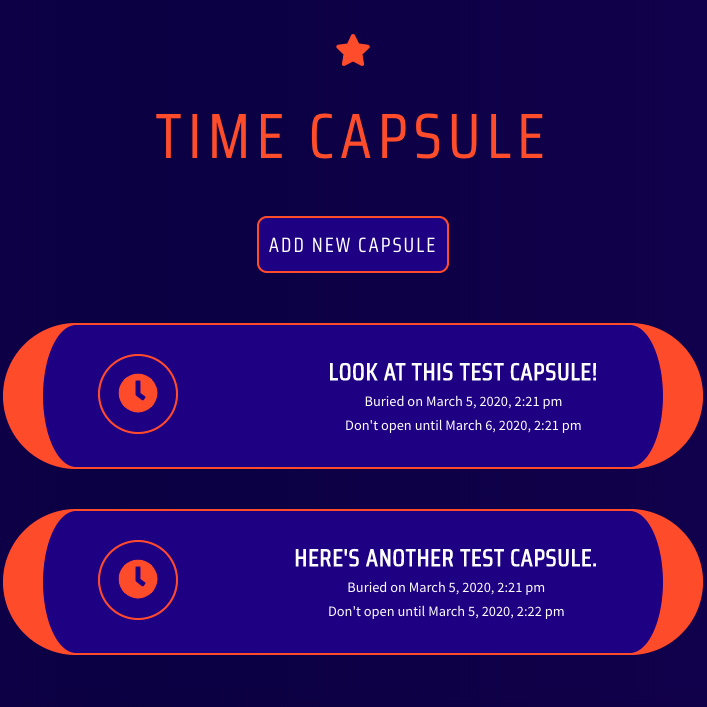
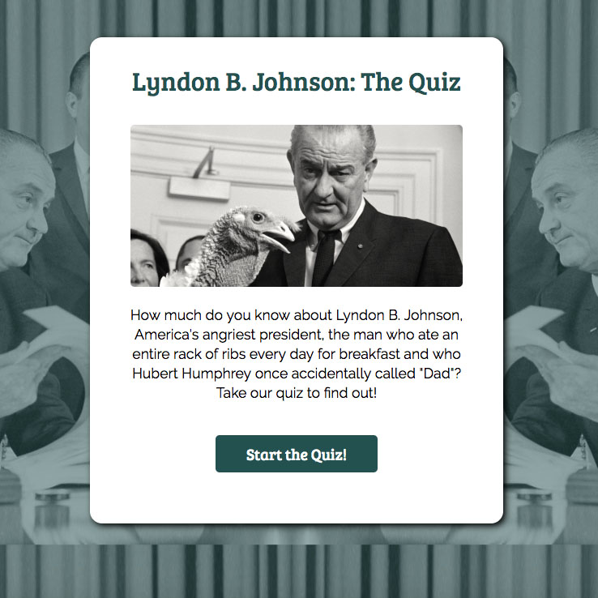
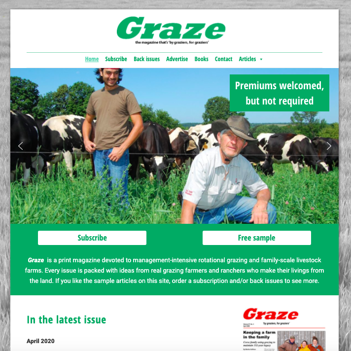
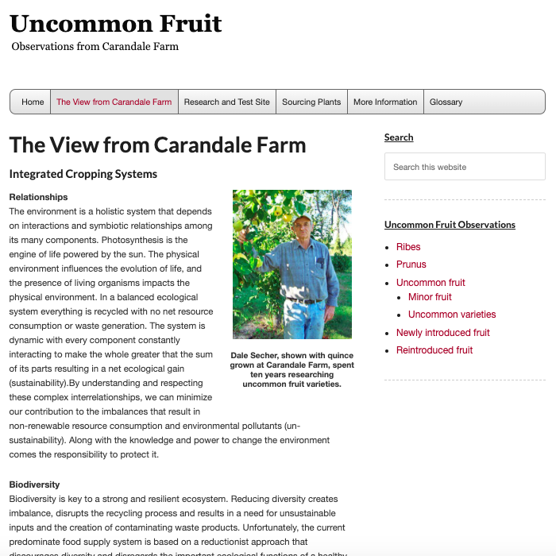

Hi! My name is Angus. I started out as a designer of print publications, but after discovering I enjoyed
HTML, CSS and coding, I moved into web development, which is my current career focus. I enjoy taking
complex information and making it flow in a visually appealing, logical way that makes sense to users.
Sick of WebMD telling you you're about to die, when you just have sniffles and a stomachache?
Introducing GrampsMD, the folksy, no-frills alternative, where Grandpa will tell you what your
real problem is. (Hint: Stop all your partying and call him and Grandma more often!) GrampsMD
uses JavaScript, JSX, React.js and CSS on the frontend, and Node.js, Express.js, PostgreSQL, and
SQL on the backend.
Live site
| Frontend Repo
| Backend Repo

Time Capsule is a simple app for sending photos and messages (whether journal entries, memories or reminders) to yourself in the future. It was
built with React.js, JSX, Moment.js and CSS on the frontend, and Node.js, Express.js, SQL and PostgreSQL on the
backend. Capsules can be locked for as little as a day to as much as five years, and it's impossible
to access them before that time.
Live site
| Frontend Repo
| Backend Repo
What Is This Place is an app built with HTML, CSS, JavaScript, jQuery, and APIs that's designed
to get information about the place you're visiting
or driving through. Just search by GPS or by the location's name, and it will return information
about the
location's name, population, demographic characteristics, and popular local venues.
Live site
| Repo

I used HTML, CSS, JavaScript and jQuery to build this simple quiz app about Lyndon B. Johnson,
America's loudest president.
Do you know as much about LBJ as biographer Robert Caro, or as little as my cousin Mike? There's
only one way to find out! Live site
| Repo
I designed this website using HTML, CSS and the Wordpress CMS for my acquaintance Ian, an actor in Los
Angeles. The project necessitated
a clean, easy-to-use and easy-to-update design. Live site

A website for a small agricultural publication using HTML, CSS and the Wordpress CMS. As many of the readers are farmers who aren't Internet-savvy, I was asked to make this site big, bold and simple. Live site

For this website, I was given a specific, basic layout by a department of the University of Wisconsin, and asked to create a pixel-perfect reproduction. I did so using HTML, CSS, JavaScript and the Wordpress CMS. Live site